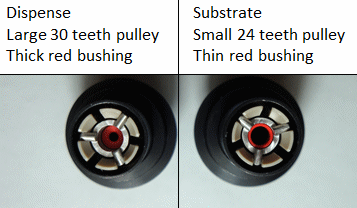
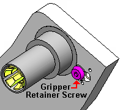
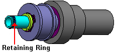
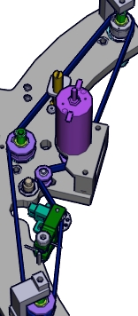

Replacing Mixer Gripper-Spinner
This procedure describes how to replace the mixer gripper-spinner and how to remove the ejector rod from the gripper-spinner for cleaning.
- if the Gripper / Spinner requires replacement because it is defective or when performing Mod 10983-DxI Spin Grip Replacement.
- If the gripper / spinner requires cleaning.
- If excessive "vessel dusting" has been found in the wash wheel
Identify the substrate and dispense gripper-spinners from the pulley size.
- The substrate gripper-spinner has a smaller pulley with 24 teeth.
- The dispense gripper-spinner has a larger pulley with 30 teeth.
-
Shut down the DxI instrument.
- Select Configure > PC Admin > System Admin > Shutdown Instrument to exit the software in preparation for powering off the instrument.
- Enter the password Access2Support, and then select OK.
- At the pop-up You must now turn off the instrument, using the instrument power switch, select OK.
- After the instrument software has shut down, turn off the instrument at the power switch.
-
Inspect the new parts and confirm installation of the correct red bushing. If the part was incorrectly assembled, file a CF.
Note: To prevent unnecessarily long repair times, it is very important to inspect the parts. If the wrong bushing is installed, the substrate probe does not fit through the gripper-spinner.

-
Remove the center rear and upper rear covers.
Note: If the dispense probe plate can be accessed from the front of the instrument, the rear covers can be left in position.
-
Prepare to remove the gripper-spinner.
- To remove the gripper-spinner follow these steps:
- Remove the probes (dispense, aspirate, and substrate) from the probe plates. Place the probes in a location where it cannot be contaminated or damaged.
Caution: To prevent fluid from dripping into the wash carousel, do not disconnect the probe tubing fittings from the manifold.
- Remove the screws that attach the dispense plate to the wash arm (one 5/32-inch button-head hex-screw, two 3/16-inch hex-screws) and remove the dispense plate from it's mounting bracket.
Note: This is a mandatory part of the procedure to ensure the spinner/gripper parts are seated properly. DO NOT install them without removing the dispense plate.
- Move the dispense plate outside and to the front of the instrument. Place the dispense plate by the substrate loader.
Caution: When moving the dispense plate, do not pull or damage the wires on the mixer motor.Note:
- Do not remove the dispense plate from the instrument. Complete removal of the plate from the instrument requires the disconnection of pneumatic lines and electrical cables.
- Remove any cable restraints or tie-wraps holding the dispense plate in position.
- Lower the aspirate plate to create extra space for maneuvering the dispense plate and gripper-spinner.
- Remove the probes (dispense, aspirate, and substrate) from the probe plates. Place the probes in a location where it cannot be contaminated or damaged.
- To remove the gripper-spinner follow these steps:
-
Remove the gripper-spinner.
-
For each gripper-spinner that is being removed:
- Remove the 5/64-inch hex-screw next to the gripper-spinner on the underside of the dispense plate.

- Noting how the belt is routed, remove the mixer belt from the pulley.
Caution: To reinstall the belt correctly, note how the belt is routed before removing it.
- Slide the gripper-spinner out of the dispense plate.
Note: If the gripper/spinner assembly is not easily removed by hand, then replace the entire wash assembly. The assembly can be ordered as a whole under part number A37061. The use of tools and excessive force can damage the dispense plate housing causing the gripper/spinner to not seat correctly, which can lead to poor alignments and vessel dusting.
- Remove the 5/64-inch hex-screw next to the gripper-spinner on the underside of the dispense plate.
-
(Optional) Remove and clean the ejector rod.
- Remove the small retaining clip that holds the ejector in position. Do not lose the clip.

- Slide the ejector out of the assembly, and clean it using an alcohol wipe or methanol on an absorbent tissue. If the mixer is heavily coated with foreign matter, use a tool to scrape the mixer and remove the matter before cleaning. Clean the collet with DI water and an absorbent tissue or swab.
- Install the ejector, and attach the retaining clip.
- Remove the small retaining clip that holds the ejector in position. Do not lose the clip.
-
For each gripper-spinner that is being removed:
-
Install the gripper spinner.
-
For each gripper-spinner that is being installed:
- Clean the mixer/spinner housing on the underside of the Dispense Probe Plate with a Scotch-Brite pad (or similar material) to remove any debris that were left behind. It may also be necessary to use a dental pick or small screwdriver to remove and tightly impacted debris, however take care to not damage the housing or introduce any new burs.
Caution: It may be necessary to remove any burs that are left behind from the retaining screw. If the screw is over-tightened it can leave a recession in the lip of the housing, remove any burs that may prevent the new mixer spinner from being properly seated at this time.
- Insert the Gripper/Spinner assembly, ensuring to keep it level in the housing. Once fully seated, use one hand to hold the spinner/gripper in place while threading the retainer screw.
Caution: The substrate and dispense gripper-spinner assemblies are different. The pulley on the substrate gripper-spinner is smaller than the pulley on the dispense gripper-spinner.
- Tighten screw on the underside of the dispense probe plate.
- Install the mixer belt, and verify that it rotates freely and is seated correctly in the idler, tensioner, and dispense probe pulleys.

- Clean the mixer/spinner housing on the underside of the Dispense Probe Plate with a Scotch-Brite pad (or similar material) to remove any debris that were left behind. It may also be necessary to use a dental pick or small screwdriver to remove and tightly impacted debris, however take care to not damage the housing or introduce any new burs.
-
For each gripper-spinner that is being installed:
-
Reinstall the dispense plate.
- Replace the dispense plate arm in the wash arm.
Caution: Verify that the mixer motor cable is routed in front of the wash arm. Do not pinch the cable under the dispense plate.Note: If the aspirate plate was lowered, raise the plate to create space for positioning the dispense plate.
- Install the dispense, aspirate, and substrate probes that were removed.
- Replace the screws that attach the dispense plate to the wash arm (one 5/32-inch button-head hex screw, two 3/16-inch hex screws).
- Perform the wash arm adjustments.
Note: Refer to the AU: Adjusting Analytical Module procedure.Note: Wash arm adjustments can be performed using the wash carousel locking pin tool, with the instrument powered down. - Replace the dispense plate arm in the wash arm.
- Install any removed covers and power on the instrument.
-
If all three gripper-spinners were replaced or any gripper-spinner from an automation line was replaced, then initialize the instrument.
Note: Initialization can fail because of mixer speed errors with newly installed gripper-spinners. If new gripper/spinners were installed then proceed with this step while in Not Ready mode:
- Move the mixer motor power connector from J2 (Mixer Motor) to J4 (Mixer Arm Eject).
- Select Diagnostics > Device Diagnostics > Digital Devices > Digital Outputs, select MixerArmEjector, and then press Toggle Output Value.
- Run this motor for five minutes to burn in the newly installed gripper-spinners.
- Move the mixer motor power connector to J2 (Mixer Motor) and the mix arm eject to J4 (Mixer Arm Eject).
- Re-initialize the system.
-
Confirm mixer speed is correct.
- In the user interface, select Diagnostics > Subsystem Diagnostics > RV Mixer.
- Confirm that the mixer speed is 2200 ±770 rpm.
-
If the mixer speed is not 2200 ±770 rpm, then:
- Run 10 Test Cycles of the RV Mixer.
- Initialize the instrument (to recalibrate the mixer system).
- In the user interface, select Diagnostics > Subsystem Diagnostics > RV Mixer.
- Confirm that the mixer speed is 2200 ±770 rpm.
-
Verify operation of the gripper-spinner.
-
Verify wash carousel alignments.
Note: Refer to the AU: Aligning Analytical Module procedure.
-
Verify eject plate adjustments.
Note: Refer to the AU: Adjusting Eject Plate procedure.
-
Run the vessel exerciser: 50 reps of Route 2 with Mixer enabled.
Verify that:
- the eject rods do not rub on the bottom of the eject plate.
- the spinning wash arm or vessels do not make a squealing noise.
- the vessels do not slip down in the collets during mixing.
Note: If a problem is encountered, contact Technical Support for assistance.Note: If excessive dusting from the vessels is found to be an issue after replacing the gripper/spinner assemblies and performing alignments, then repalce the entire wash assembly.
-
Verify wash carousel alignments.
-
Verify system operation.
-
Perform system verification as stated in the Verification of Service Repair document .
Refer to the Admin: Verification of Service Repair document.
-
Perform system verification as stated in the Verification of Service Repair document .